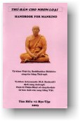

|
BuddhaSasana Home Page |
Vietnamese, with Unicode Times font |
|  |
Thủ bản cho nhơn loại Tỳ-kheo Phật Lệ (Buddhadàsa
Bhikkhu) |
|
Thủ bản cho nhơn loại Tỳ-kheo Phật Lệ (Buddhadàsa
Bhikkhu)
sáng tác bằng tiếng Thái.
Tiểu sử của Tỳ-kheo Phật Lệ Tỳ-kheo Phật Lệ (Buddhadàsa Bikkhu, người hầu của Đức Phật) xuất gia năm 1926, lúc Người được hai mươi tuổi. Sau vài năm học tập ở Bangkok, nhận thấy "sự thanh tịnh chẳng thể tìm thấy nơi các thành phố lớn", Người quay về sống gần thiên nhiên, để nghiên cứu Phật pháp, và thành lập thiền viện Suan Mokkhabalarama (Khu Vườn của Năng lực Giải thoát, thường được gọi tắt là Suan Mokkh), vào năm 1932, ở gần quê Người là thành phố Pum Riang (nay thuộc quận Chaiya). Vào thời đó, Suan Mokkh là trung tâm Phật giáo duy nhứt và là một trong số rất ít các trung tâm chuyên dạy thực tập Thiền Minh sát ở miền Nam nước Thái. Tiếng đồn về Tỳ-kheo Phật Lệ và các công trình của Người ở Tùng Lâm Suan Mokkh chẳng bao lâu đã lan khắp nước và được xem đó là một trong những biến cố quan trọng về lịch sử Phật giáo ở Thái lan. Xin lược kể lại sau đây một vài công đức mà Người đã cống hiến cho Phật giáo. Thiền sư Budhadàsa đã dầy công chỉnh đốn lại các giải thích sai lầm về các nguyên tắc căn bản của giáo lý Phật giáo Nguyên thủy, tức là sự thực hiện chánh tông của Đức Phật trước khi giáo pháp bị chôn vùi dưới đống chú giải, dưới mớ nghi thức rườm rà, dưới các tranh chấp môn phái, và những thứ cùng loại. Công phu nầy dựa trên sự thâm cứu của Người về các Kinh văn Pali (Tam Tạng Kinh điển và các Chú giải), cộng thêm các kinh nghiệm tu tập, giảng dạy và chứng nghiệm của Người về các giáo lý đó. Rồi Người truyền dạy lại những gì mà Người có thể nói là thật sự dập tắt đau khổ (dukkha, sự bất toại nguyện, sự thống khổ). Chí nguyện của Người là tạo nên một hệ thống tham chiếu Kinh điển đầy đủ để giúp cho các công cuộc khảo cứu và thực tập hiện nay và mai sau. Phương cách tiến hành của Người luôn luôn có tánh cách khoa học, chơn trực và thực tiễn. Mặc dầu sự học vấn thế tục của Người chỉ đến lớp chín và khoá sơ đẳng về Pali, Người được các viện Đại học Thái lan trao tặng năm văn bằng Tiến sĩ Danh dự. Các tác phẩm, vừa sáng tác, vừa chuyển tả từ các buổi pháp đàm của Người, đã chiếm một căn phòng lớn trong Thư viện Quốc gia và có ảnh hưởng rộng lớn đến các Phật tử thuần thành của Thái lan. Nhiều luận án Tiến sĩ viết về Người và di sản tinh thần của Người. Tác phẩm của Người có thể tìm thấy ở khắp các tiệm sách trong nước và thường được dùng làm tặng phẩm cho các người đi dự lễ hoả táng. Các phần tử tiến bộ trong xã hội Thái, nhứt là giới trẻ, rất hứng khởi trước lời giáo huấn và nhứt là tấm gương vong kỷ của Người. Từ dạo năm 1960 trở đi, các thành phần tranh đấu và các lý thuyết gia, trong các điạ hạt giáo dục, an sinh xã hội, phát triển nông thôn đã đem ra ứng dụng các lời giáo huấn và khuyến cáo của Người. Rất nhiều tu sĩ Phật giáo quan tâm đến sự bảo vệ thiên nhiên và phát triển cộng đồng, đã noi theo tư tưởng của Người. Người đã cung cấp sợi giây liên lạc giữa truyền thống thánh kinh và giới Phật giáo nhập thế ngày nay. Kể từ khi thành lập Suan Mokkh, Người đã nghiên cứu tất cả mọi hệ phái của Phật giáo, cũng như các tôn giáo lớn khác trên thế giới. Sự lưu tâm của Người có tánh cách thực tiễn hơn là nặng về từ chương, học thuật. Người tìm cầu sự kết hợp với nhau giữa những hạng người thật sự chơn tu cùng nhau tranh đấu để -- như Người thường nói -- "kéo nhơn loại thoát khỏi ma lực của chủ nghiã duy vật". Tâm hồn khoáng đạt đó của Người đã đưa đến gần bên Người rất nhiều thân hữu và sinh viên khắp nơi trên thế giới, kể cả các người theo Cơ đốc giáo, Hồi giáo, Ấn giáo, và Sikhs. Dự án cuối cùng của Người là thành lập một Trung tâm Quốc tế Ẩn tu Phật pháp. Cùng với Suan Mokkh, Trung tâm nầy dự định cung cấp phương tiện cho: - Các khóa nhập môn cho người ngoại quốc về sự hiểu biết chơn chánh các giáo lý và thực hành Phật giáo; - Các cuộc hội họp giữa các Phật tử trên hoàn cầu để luận bàn và chấp nhận về "Trái Tim Phật Giáo". - Các cuộc gặp gỡ giữa các lãnh tụ mọi tôn giáo để tạo sự hiểu biết chung, hợp tác cùng nhau, hầu kéo thế giới nầy ra khỏi sự áp bức của chủ nghiã duy vật. Người cũng để lại các lời chỉ dạy về sự thành lập một tu viện nhỏ mà nơi đó các tu sĩ Phật giáo ngoại quốc được huấn luyện thành các Giáo sĩ (Dhamma duta). Tu viện nầy hiện nay đang hoạt động dưới danh hiệu "Daun Kiam" hay là Suan Atammayatarama. Một nữ tu viện tương tự cũng đang chờ các vị phụ nữ đến gia nhập. Người đã gọi nữ tu viện đó là Dhamma Mata (các Pháp Mẫu, những bà "mẹ" đã "sanh" con xuyên qua Chánh pháp). Thiền sư Buddhadàsa viên tịch năm 1993, sau nhiều lần bị bịnh tim đột biến, mà vẫn chống cự để trở về giảng dạy. Lần cuối cùng xảy ra khi Người đang soạn thảo buổi pháp đàm dự định sẽ nói vào ngày Sinh nhựt của Người, hai ngày sau đó (27 tháng Năm). Suan Mokkh nay vẫn tiếp tục ghi trong tâm khảm, thể hiện trong công tác, của những ai đã noi theo tấm gương và lời giáo huấn của Người. Suan Mokkh chẳng phải chỉ là một điạ điểm vật chất, nó còn là một nơi giải thoát mà ta cần khám phá ngay trong đời nầy. -ooOoo- Ðầu trang | Mục lục | 01 | 02 | 03 Xem thêm bản Anh ngữ: Handbook for Mankind |
Chân thành cám ơn Cư sĩ Thiện Nhựt đã gửi tặng bản vi tính (Bình Anson, 12-2003)
[Trở
về trang Thư Mục]
last updated: 23-12-2003